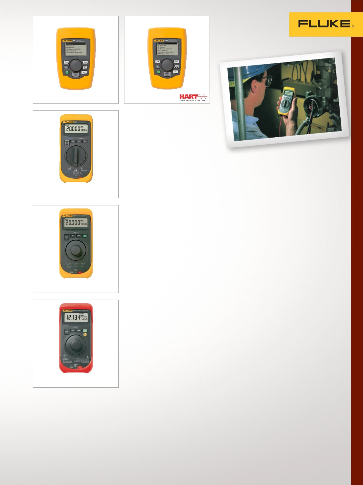

7
Calibración eléctrica, Multifunción y de lazo en mA
Calibradores de
lazo en mA
Los calibradores de lazo de Fluke
son ideales para una amplia
variedad de aplicaciones de
calibración desde 4 hasta 20 mA.
Calibrador de lazo 705
Una solución rentable e integrada para la
calibración, reparación y mantenimiento
de lazos de corriente.
•
Generación, simulación y medición
de mA
•
Visualización simultánea de mA y
porcentaje de amplitud
•
Alimentación en lazo de 24 V con
medición de mA
•
Medición de 0 a 28 V CC para
comprobar la tensión de lazo
•
Calibración trazable NIST
Calibrador de lazo 707
Solución de alto rendimiento,
extraordinariamente rápida y fácil de
utilizar; para la calibración, reparación, y
mantenimiento de los lazos de corriente.
•
Generación, simulación y medición
de mA
•
Alimentación en lazo de 24 V con
medición en mA; incluye el resistor
HART de 250 Ω
•
Medición de 0 a 28 V CC para
comprobar la tensión de lazo
•
Calibración trazable NIST
Calibrador de lazo 707EX IS
Opción con seguridad intrínseca
para áreas con riesgo de explosiones,
y certificada conforme a la directiva
ATEX (Ex II 2 G Ex ia IIC T4) en las
Zonas 1 y 2.
•
Resolución de 1 µA para la generación,
simulación y medición de mA
•
Mide V CC a 28 V
•
Modos de inicio predeterminados de
0 a 20 mA o 4 a 20 mA
•
La resistencia compatible con HART
®
se conecta en serie con la alimentación
de bucle para poder funcionar con
comunicadores HART
•
Calibración trazable NIST
707
709
705
Calibrador de precisión de lazo 709
Reduce el tiempo que lleva medir o
generar voltaje o corriente y alimentar
un lazo.
•
La mejor precisión en su clase a
0,01% de lectura
•
El diseño pequeño y resistente fun-
ciona en seis baterías AAA estándares
•
Interfaz de usuario intuitiva con botón
Quick-Set para un ajuste rápido, fácil
de usar
•
Resistencia de 250 Ω s
eleccionable incorporada para
comunicaciones HART
•
Energía de lazo de 24 V dc con Modo
de medición de mA (-25% a 125%)
•
Resolución de 1 µA en rangos mA y
1 mV en rangos de voltaje
•
Calibración trazable NIST
Calibrador de precisión de lazo
709H con comunicaciones/
diagnósticos HART
Diseñado para ahorrar tiempo y producir
resultados de alta calidad
•
Comunicación HART integrada
para el fácil mantenimiento del
dispositivo HART
•
La mejor precisión en su clase a
0,01% de lectura
•
El diseño pequeño y resistente fun-
ciona en seis baterías AAA estándares
•
Interfaz de usuario intuitiva con botón
Quick-Set para un ajuste rápido, fácil
de usar
•
Resistencia de 250 Ω
seleccionable incorporada para
comunicaciones HART
•
Energía de lazo de 24 V dc con Modo
de medición de mA (-25% a 125%)
•
Resolución de 1 µA en rangos mA y
1 mV en rangos de voltajes
•
Calibración trazable NIST
707EX
709H